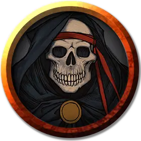

Образ смерти
Avatar of Death
Средняя Нежить, нейтрально-злая

Класс Доспеха 20
Хиты половина от максимума хитов вызвавшего его персонажа
Скорость 60 футов, летая 60 футов (парит)
| мод | спас | ||
|---|---|---|---|
| СИЛ | 16 | +3 | +3 |
| ЛОВ | 16 | +3 | +3 |
| ТЕЛ | 16 | +3 | +3 |
| мод | спас | ||
|---|---|---|---|
| ИНТ | 16 | +3 | +3 |
| МДР | 16 | +3 | +3 |
| ХАР | 16 | +3 | +3 |
Иммунитет к урону некротическая энергия, яд
Иммунитет к состояниям окаменение, отравление, паралич, очарование, испуг, бессознательность
Чувства истинное зрение 60 футов, тёмное зрение 60 футов, пассивное Восприятие 13
Языки все, известные вызвавшему персонажу
Опасность —
Бонус мастерства +2
Особенности
Бестелесное перемещение. Образ может проходить сквозь предметы и других существ, как будто они являются труднопроходимой местностью. Он получает 5 (1к10) урона силовым полем, если заканчивает ход в предмете.
Иммунитет к изгнанию. Образ обладает иммунитетом к умениям, изгоняющим нежить.
Действия
Коса смерти. Образ рубит призрачной косой сквозь существо, находящееся в пределах 5 футах от него, нанося 7 (1к8 + 3) рубящего урона плюс 4 (1к8) урона некротической энергией.
Описание
См. Колода многих вещей - карта Череп.